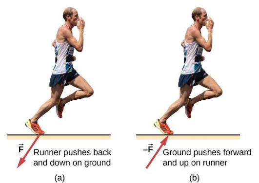

วิชาพลศึกษา

ชีวกลศาสตร์เป็นสาขาที่นำหลักการทางฟิสิกส์และกลศาสตร์มาวิเคราะห์ท่าทางการเคลื่อนไหวของมนุษย์ เพื่อเพิ่มประสิทธิภาพสูงสุดในการเล่นกีฬาและป้องกันอาการบาดเจ็บ การศึกษาแรงกระทำ จุดศูนย์ถ่วง และมุมในการกระโดดหรือวิ่งช่วยให้โค้ดและนักกีฬาสามารถปรับปรุงเทคนิคเฉพาะตัวได้อย่างแม่นยำ ตัวอย่างเช่น การคำนวณมุมองศาในการปล่อยลูกพุ่งแหลนหรือการยينตัวในท่าสตาร์ทวิ่งร้อยเมตรเพื่อให้ได้ความเร่งสูงสุด การประยุกต์ใช้องค์ความรู้นี้จึงเปลี่ยนจากการฝึกซ้อมตามความรู้สึกไปสู่การวิเคราะห์ด้วยข้อมูลเชิงประจักษ์ที่มีความเที่ยงตรงสูงมาก